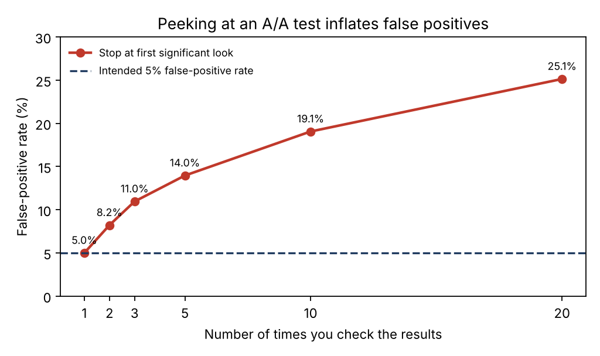
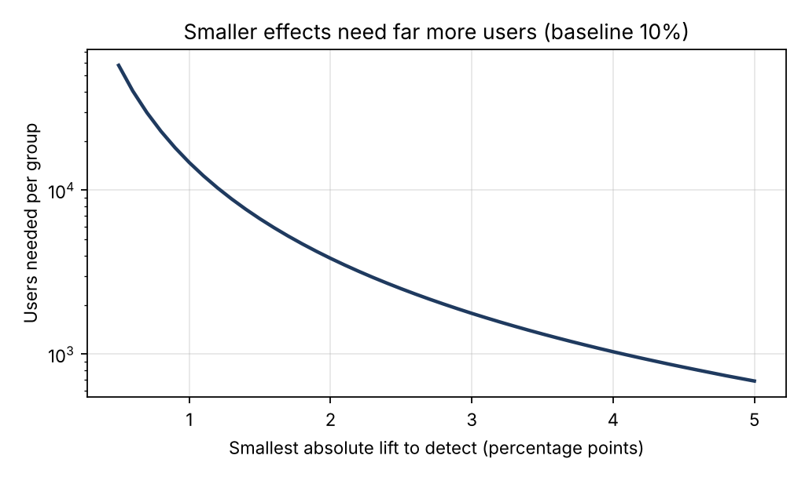

A/B Test Toolkit: how to make a ship decision you can defend
Most bad launches aren't caused by bad ideas. They're caused by experiments that were too small, broken, or stopped the moment they looked good. This toolkit encodes the discipline a product team needs: size first, validate, measure with uncertainty, then decide.
The product problem
Who has it
PMs and analysts who run conversion experiments but don't own a stats platform.
What goes wrong
Under-powered tests, broken randomisation, and 'peeking' until p < 0.05 lead teams to ship changes that do nothing.
What I built
A small, readable library + simulations that prove each failure mode, + a one-page decision memo.
How I'd measure success
Share of experiments with a pre-registered sample size; share of launches that hold their lift after 30 days.
Try it: plan an experiment
Same formula as abkit.sample_size_per_group (α = 0.05 two-sided, power = 0.80).
Try it: read a result
Two-proportion z-test with a 95% CI on the lift, plus a sample-ratio-mismatch check (assumes a 50/50 split), as in abkit.two_proportion_test and abkit.srm_check.
What the simulations prove
In A/A tests where nothing changed, checking results repeatedly and stopping at the first "significant" look inflates false positives five-fold. This is the single most useful chart to show a team before they start peeking.

The smaller the lift you want to detect, the faster the sample size grows. Picking the MDE is a product decision, not a stats one: it's the smallest change worth shipping.

Decisions and trade-offs
- Fixed-horizon test over sequential for v1: simplest to explain to stakeholders; sequential testing is on the roadmap for teams that must monitor.
- Standard library for the statistics core: anyone can audit the maths in one file.
- Simulated data in the notebook: the true effect is known, so the method can be checked. It's a teaching example, not a product finding.
Next
- Analyse a real public experiment dataset and write the decision memo.
- Continuous metrics (Welch t-test) and CUPED variance reduction.
- Sequential testing so teams can monitor safely.